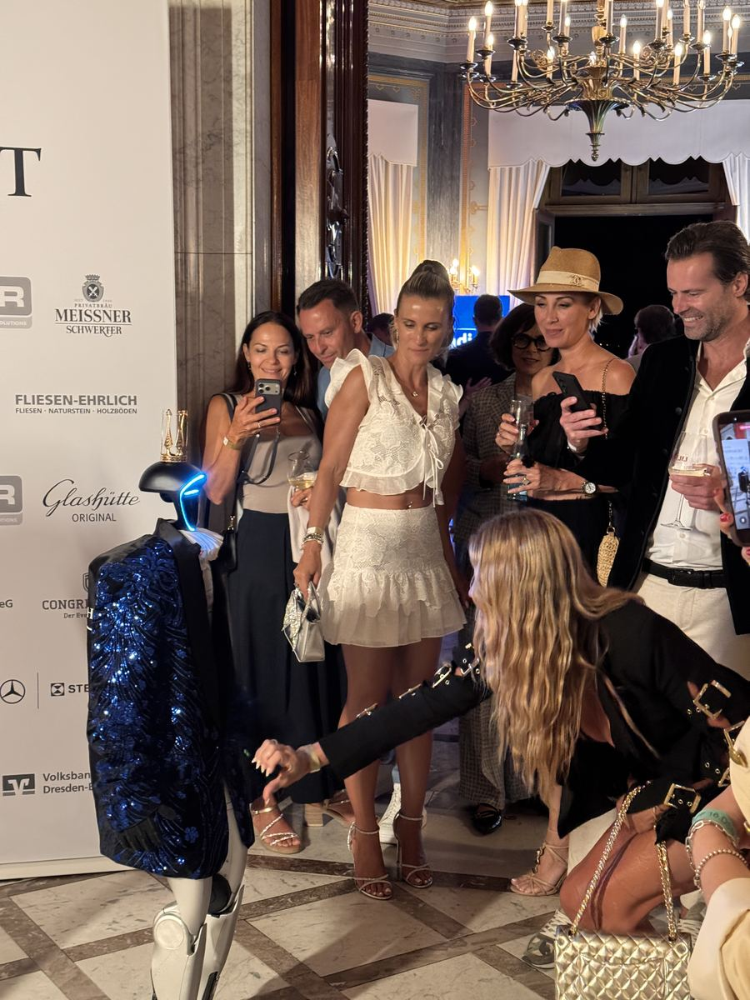
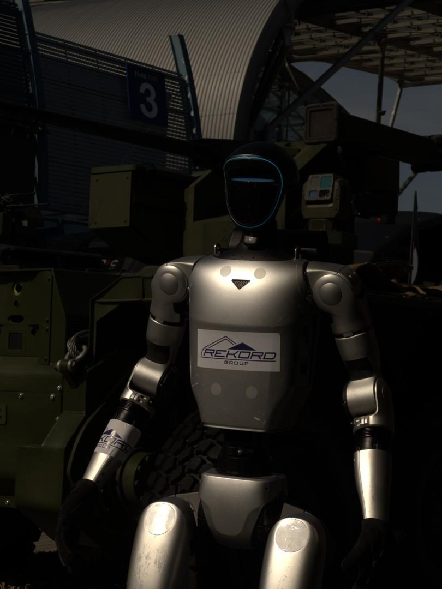

- Startseite
- Roboter mieten Linz
Roboter mieten · Linz
Roboter mieten in Linz
Der Unitree G1 kommt nach Linz und Oberösterreich: ins Design Center, ins Brucknerhaus, in die Tabakfabrik oder direkt in Ihr Werk. Operator, Transport und Branding sind im Preis.

Linz: Industrie trifft Medienkunst
Linz ist Stahlstadt und zugleich die Stadt, in der seit Jahrzehnten über das Verhältnis von Mensch und Maschine nachgedacht wird. Oberösterreich ist das Industriebundesland: Stahl, Maschinenbau, Fahrzeugteile, Kunststoff. Für einen humanoiden Roboter ist das ein Publikum mit Vorwissen. Wer ihn hier einsetzt, zeigt Kunden und Mitarbeitenden, dass Automatisierung im eigenen Haus ein Thema ist.
Der Unitree G1 kommt mit Operator, Drehbuch und Ihrem Branding. Ein Veranstaltungstag kostet ab 2.300 € netto, Transport und Haftpflichtversicherung eingeschlossen.
Design Center, Brucknerhaus, Tabakfabrik
- Design Center Linz — Fachmessen und Kongresse unter dem Glasdach. Der Roboter arbeitet am Stand und holt Besucher aus dem Gang.
- Brucknerhaus — Festakte, Jubiläen und Preisverleihungen an der Donau, der Roboter als Gastgeber im Foyer.
- Tabakfabrik Linz — Produktpräsentationen, Start-up-Events und Firmenfeiern in Industriearchitektur.
- voestalpine Stahlwelt — Kundenveranstaltungen, bei denen Technik das Thema ist.
Auf Automatisierungs- und Industriemessen ist ein Humanoid am Stand kein Fremdkörper, sondern das Thema selbst. Wie ein Messeauftritt abläuft, steht unter Messe-Roboter mieten.
Im Werk: Tag der offenen Tür, Jubiläum, Lehrlingstag
Viele Veranstaltungen in Oberösterreich finden nicht in einer Eventlocation statt, sondern im Betrieb. Der Roboter begrüßt die Besucher am Werkstor, begleitet die Führung und steht am Ende für Fotos bereit. Beim Lehrlingstag oder auf der Karrieremesse zieht er junge Leute an den Stand und beantwortet Fragen zum Unternehmen, die wir ihm vorher einspielen.
Praktisches
Der Roboter braucht einige Quadratmeter ebene Fläche und eine gewöhnliche Steckdose. Der Operator ist die ganze Zeit dabei, achtet auf Abstände und wechselt die Akkus, ohne dass die Show unterbricht. Der Roboter erkennt Personen und Hindernisse über LiDAR und Computer Vision.
Referenzen: Industriemesse und Wissenschaftszentrum


Auf der Industriemesse MSPO arbeitete der Roboter zwei Tage lang als Botschafter einer Unternehmensgruppe. Im Kopernikus-Wissenschaftszentrum in Warschau stand er bei einem Abend für Erwachsene zum Thema Robotik und künstliche Intelligenz in der Ausstellung. Im deutschsprachigen Raum war er bei der Dresdner Schlössernacht im Einsatz.
Sie planen eine Veranstaltung in Linz? Termin und Preis anfragen.
Häufige Fragen
Ein ganzer Veranstaltungstag kostet ab 2.300 € netto, mit Operator, Transport, Branding und Haftpflichtversicherung. Bei Einsätzen ab zwei Tagen gibt es 15 % Rabatt auf jeden Tag.
Ja. Wir kommen nach Linz und in ganz Oberösterreich, nach Wels, Steyr, Leonding, Traun oder Enns. Der Transport ist im Preis enthalten.
Ja, auf ebenem, trockenem Boden. Der Roboter braucht einige Quadratmeter freie Fläche und eine gewöhnliche Steckdose. Den Platz und die Wege stimmen wir vorher mit Ihnen ab.
Ja. Für Fachpublikum legen wir einen sachlichen Auftritt fest und spielen dem Roboter Wissen über Ihr Unternehmen ein. Er begrüßt Kunden und Delegationen auf Deutsch, Englisch und in jeder anderen Sprache.